结论（已定稿）：标志就用 闪电 `concept-bolt.svg`，已写入
packages/console/public/icon.svg；双刃 `blades-duotone.svg`（冷色霓虹）作为延续保留，
放在 docs/design/brand/icon-alt-blades.svg。
位图（打包 png / ico、托盘、文档导出）统一由 pnpm icons 从那个矢量源派生，不用手导。
这一页是探索过程的历史记录，按时间顺序排列，不再代表当前状态。 每行都是同一套尺寸阶梯（48 / 32 / 24 / 16）加浅/深底对照， 16px 能不能认得出来是主要判断标准。 为什么最后选了闪电而不是双刃：双刃的基因靠两条细刃的咬合， 到 16px 就糊成一块；闪电只有一块剪影，小尺寸下轮廓最硬。
A 段Bolt 的比例与胖瘦档位；B 段 双刃 v3 的七种配色； C 段 简单形状集（闪电就出自这里）；D / E 段 更早的线条方向，已否决。 配色与形状正交：定下形状后，任何一套配色都能直接套上去。
定位原句：「把手上所有大模型渠道合成一个本地地址」、 「当前渠道挂了自动换下一个」、 「排好优先级，按顺序挑渠道」、 「什么样的请求，落到哪个渠道组」、 「渠道会挂，你的活不会停」。
上一轮的「横向拉宽」方向作废：把 176 × 225 拉到 230 × 225 之后，整个图形变成「宽 ≈ 高」，
看起来就扁了——那正是被否掉的原因。
本轮改成：以 F3（高挺均衡）为基准，只把闪电两根臂收窄，
圆角一律不动。F3 的圆角来自 stroke-width: 14（≈ 7px 半径），
所以下面 4 款瘦身版全部保持 stroke-width="14"，只改路径。
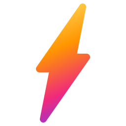
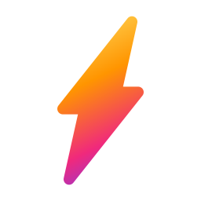
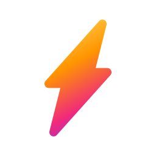
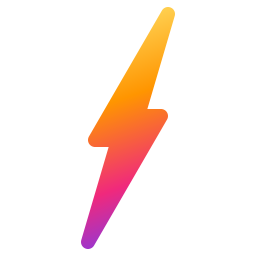
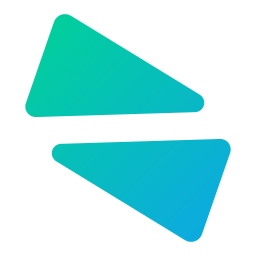
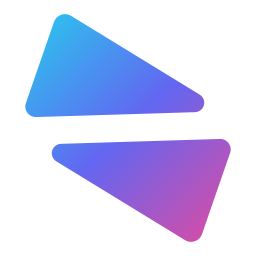
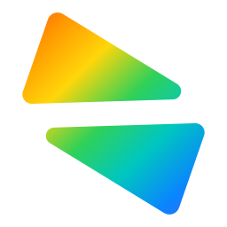
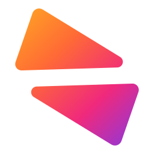
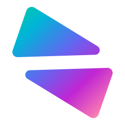
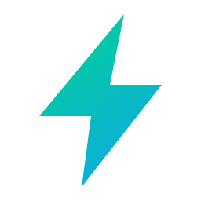
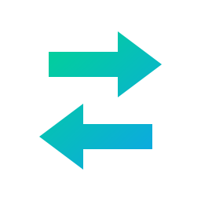
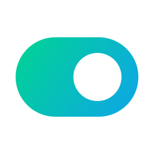
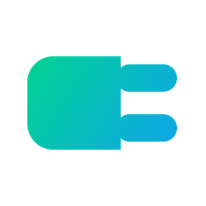
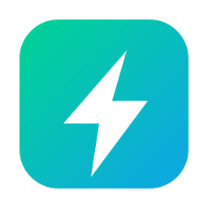
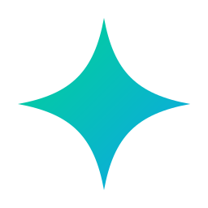
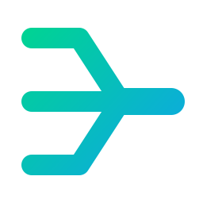
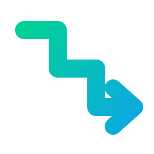
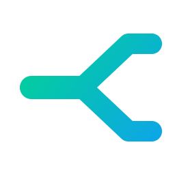
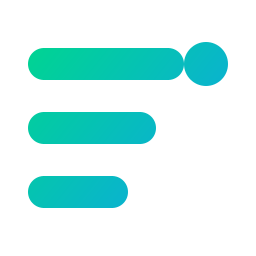
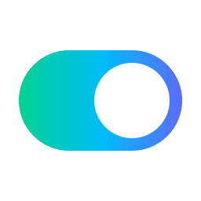
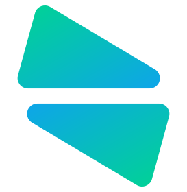